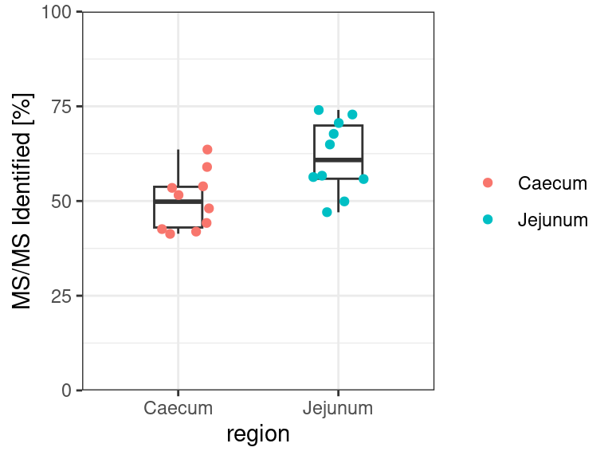

library(tidyverse)
library(patchwork)
library(gt)
library(here)2 Run quality
The quality of the metaproteomics data can be evaluated using several parameters. For example the percentage of MS/MS identified and the number of peptide sequences identified. The MetaLab MAG tool output the file final_summary.tsv, which summarize the quality of the metaproteomics run sample by sample.
In this chapter, we describe how to summarize and visualize the run quality of MetaLab MAG data.
2.1 Load libraries
You need to load the libraries tidyverse, patchwork and gt. The patchwork package can be use to combine separate plots create with ggplot and gt to create nice tables.
2.2 Load data frame
Next, you need to load the data frames that summarize the quality run and that contains the metadata of the samples. Here you can use read_tsv(), because both data frames are separated by tabs.
quality <- read_tsv("rawdata/final_summary.tsv")
metadata <- read_tsv("rawdata/metadata.txt")Let´s have a look of the data.
| Raw file | Experiment | MS/MS | MS/MS Identified | MS/MS Identified [%] | Peptide Sequences Identified |
|---|---|---|---|---|---|
| 10_18 | 10_18 | 67058 | 39552 | 58.98 | 26362 |
| 10_9 | 10_9 | 52640 | 38984 | 74.06 | 20835 |
| 11_18 | 11_18 | 71382 | 38238 | 53.57 | 23999 |
| 11_9 | 11_9 | 48232 | 24088 | 49.94 | 8282 |
| 12_18 | 12_18 | 64638 | 26744 | 41.38 | 13815 |
| 12_9 | 12_9 | 43689 | 20545 | 47.03 | 7042 |
| Probenname | Abschnitt |
|---|---|
| 9.1 | Stomach Digesta |
| 9.3 | Stomach Mucosa 1 |
| 9.4 | Stomach Mucosa 2 |
| 9.5 | Stomach Mucosa 3 |
| 9.6 | Duodenum Digesta |
| 9.8 | Duodenum Mucosa |
2.3 Create a table
Now we can create a summary table of all quality parameters present in the quality run data frame. Before calculating the maximum and minimum value, mean and standard deviation, you need to clean and tidy the data. In this case it is necesary to remove the column Experiment, rename the column Raw file and filter our the last row that contains the total of all samples.
table <- quality %>%
select(-Experiment) %>% #Remove column
rename(rawfile = `Raw file`) %>% #Rename variable "Raw file"
filter(rawfile != "Total") %>% #Filter out the row "Total"
pivot_longer(cols = -rawfile, #Reshape the data frame to a long version
names_to = "variable",
values_to = "value") %>%
group_by(variable) %>%
summarise(Max = round(max(value), 1),
Min = round(min(value), 1),
Mean = round(mean(value), 1),
Sd = round(sd(value), 1))You can use the packages gt to output a nice table.
table %>%
gt()| variable | Max | Min | Mean | Sd |
|---|---|---|---|---|
| MS/MS | 76291.0 | 43689.0 | 59796.2 | 10313.3 |
| MS/MS Identified | 46623.0 | 20545.0 | 32962.1 | 6427.9 |
| MS/MS Identified [%] | 74.1 | 41.4 | 55.8 | 10.4 |
| Peptide Sequences Identified | 30231.0 | 7042.0 | 16630.8 | 6401.0 |
2.4 Create a histogram of the identified MS/MS
Sometimes visualizing the data can give us a better idea of the quality per sample. You can try to plot the distribution of MS/MS identified (%) across all samples. You can add a vertical line using geom_vline() to highlight the mean of the values. The mean can be manually added using the value calculated in the previous table.
percentage <- quality %>%
rename(rawfile = `Raw file`) %>% #Rename variable "Raw file"
filter(rawfile != "Total") %>% #Filter out the row "Total"
ggplot(aes(x = `MS/MS Identified [%]`)) +
geom_histogram(binwidth = 2) +
geom_vline(xintercept= 55.8, linetype = "dashed", #Add a line to indicate mean
color = "red", linewidth = 1) +
scale_x_continuous(breaks = seq(0, 75, by = 5)) + #Control x axis scale
scale_y_continuous(limits = c(0, 4), #Control y axis scale
breaks = seq(0, 5, by = 1),
expand = c(0, 0)) +
labs(y = "Number of samples") +
theme_bw()
percentage
You can try to do the same plot with the Peptide sequences identified. Be aware that you need to change the scale in the y axis.
2.5 Create a box plot using a grouping variable
You can also visualize the MS/MS identified (%) in a group of samples. In this case we can create a box plot indicating the MS/MS identified (%) in samples from the Caecum and Jejunum.
First of all we need to clean and tidy the metadata. You need to rename the column Probenname so it match the column in our quality data frame. After, you need to modify the samples name stored in the rawfile column. You will notice that in the metadata the values of rawfile contain a “.” but in the run quality data the rawfile contains “_”. The values in bot data frames must match, otherwise it is impossible to join them. Finally, you can separate the column that contain the information from where the sample was taken and the kind of sample.
metadata_clean <- metadata %>%
rename(rawfile = Probenname) %>% #Rename column to match quality data frame
mutate(rawfile = str_replace(rawfile, "\\.", "_")) %>% #Replace . for _
separate(Abschnitt, #Separate the column "Abschnitt" into 2 new columns
sep = " ",
into = c("region", "source"))
head(metadata_clean)# A tibble: 6 × 3
rawfile region source
<chr> <chr> <chr>
1 9_1 Stomach Digesta
2 9_3 Stomach Mucosa
3 9_4 Stomach Mucosa
4 9_5 Stomach Mucosa
5 9_6 Duodenum Digesta
6 9_8 Duodenum Mucosa After tidying the metadata, you can join it with the quality data. This new data frame can be use to create a box plot of the MS/MS identified (%) in the samples label as Caecum and Jejunum.
boxplot <- quality %>%
rename(rawfile = `Raw file`) %>%
filter(rawfile != "Total") %>%
select(-Experiment) %>%
left_join(metadata_clean, by = "rawfile") %>% #join the metadata and quality
ggplot(aes(y = `MS/MS Identified [%]`,
x = region)) +
geom_boxplot(width = 0.3) +
geom_jitter(width = 0.2,
aes(color = region)) + #color the dots by gut region
scale_y_continuous(expand = c(0, 0),
limits = c(0, 100))+ #Modify the y scale
theme_bw() +
theme(legend.title = element_blank()) #Remove the legend title
boxplot
2.6 Create a compose plot
Finally you can create a compose plot using patchwork to display the MS/MS identified (%) in all the samples and gruped by the different gut regions.
(percentage | boxplot) +
plot_annotation(tag_levels = 'A')